ELO320 - Estructuras de Datos y Algoritmos
Estructuras de datos Lineales
Marie González-Inostroza
Lista Simple Enlazada: Inicializar
Las listas, en su versión más básica, dependen de un puntero al inicio de la lista. Éste suele llamarse header, cabecera o inicio.
#include<stdio.h>
typedef struct nodo{
int dato; //dato, puede ser lo que uds. necesiten
struct nodo *sgte; // puntero a un nodo enalce.
} nodo_t;
int main(int argc, char **argv){
nodo_t * inicio = NULL;
// Inicializamos la lista, con su puntero de inicio apuntando a NULL
// Equivalente a lista vacía []
return 0;
}
Lista Simple Enlazada: Inicializar


Lista Enlazada PRO
Existen otras implementaciones de listas enlazadas simples, donde se incluyen más punteros y variables de control.
#include<stdio.h>
typedef struct nodo{
int dato;
struct nodo *sgte;
} nodo_t;
int main(int argc, char **argv){
nodo_t * inicio = NULL;
nodo_t * final = NULL;
int largo = 0;
return 0;
}
Lista Enlazada PRO


Lista Doblemente Enlazada
Modificación de la lista simple enlazada.
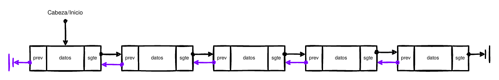
Éste TDA tiene un enlace más, para acceder rápidamente al nodo previo y mejorar la navegación.
Lista Doblemente Enlazada
- Controlar el inicio de la lista.
- Apuntar al siguiente elemento en la lista.
- Apuntar al anterior elemento en la lista.
- Acceder a cada nodo.
Lista Doblemente Enlazada: Nodos
struct nodo{
int dato;
struct nodo *sgte;
struct nodo *prev;
};
typedef struct le_nodo{
float datos[20];
struct le_nodo *sgte;
struct le_nodo *prev;
} nodo_t;
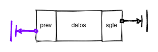
Lista Doblemente Enlazada: Interfaz
- Inicializar Lista
- Agregar un elemento a una lista
- Determinar el largo de una lista
- Eliminar un elemento de una lista
- Imprimir una lista
- Limpiar una lista
Pilas o Stacks
TDA que permite operar solo en uno de sus extremos. Es de tipo LIFO (Last In, First Out). Puede ser implementada con arreglos o listas.
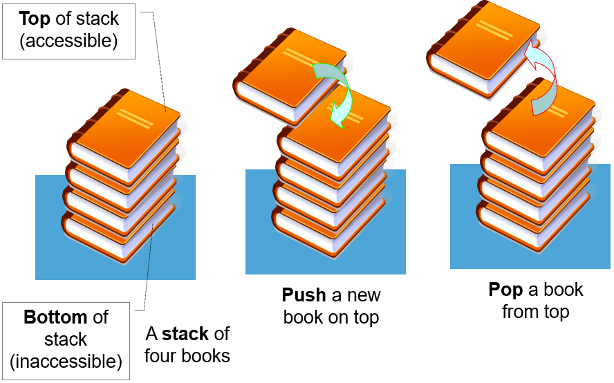
Pilas o Stacks: Interfaz
push(): Ingresa un nuevo elemento en la pilapop(): Elimina el elemento superior de la pilapeak(): Devuelve el valor del primer elemento en la pilais_empty(): Revisa si la pila está vacíais_full(): Revisa si la pila está llena (solo para tamaños fijos)
Pilas o Stacks
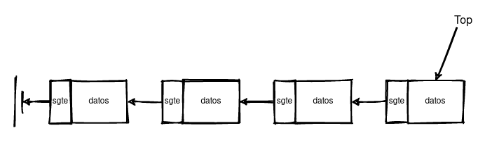
Pilas o Stacks: push()
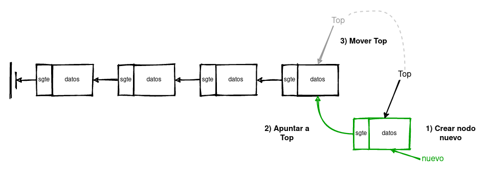
Pilas o Stacks: pop()
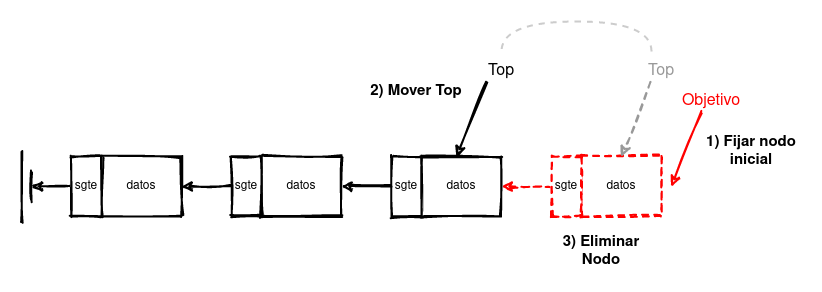
Listas Circulares
Es una variación de la lista simple/doble enlazada en la que el primer elemento está conectado con el último, creando así una estructura circular.
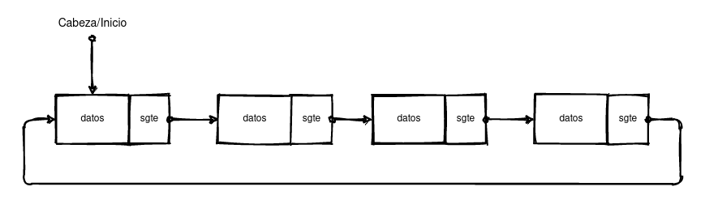
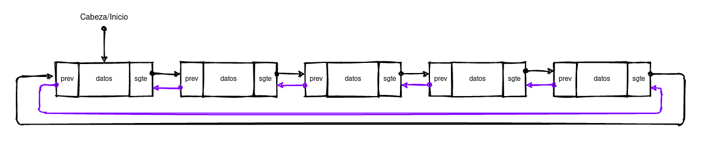
Listas Circulares: Ventajas
- Cualquier nodo puede ser la cabecera o final
- Si una estructura tiene dos punteros, ahora solo es necesario uno
- Útil para lecturas reiterativas de elementos
Colas o Queues
TDA que permite operar en un extremo para entrada y en otro extremo para salida. Es de tipo FIFO (First In, First Out). Puede implementarse con arreglos o listas.
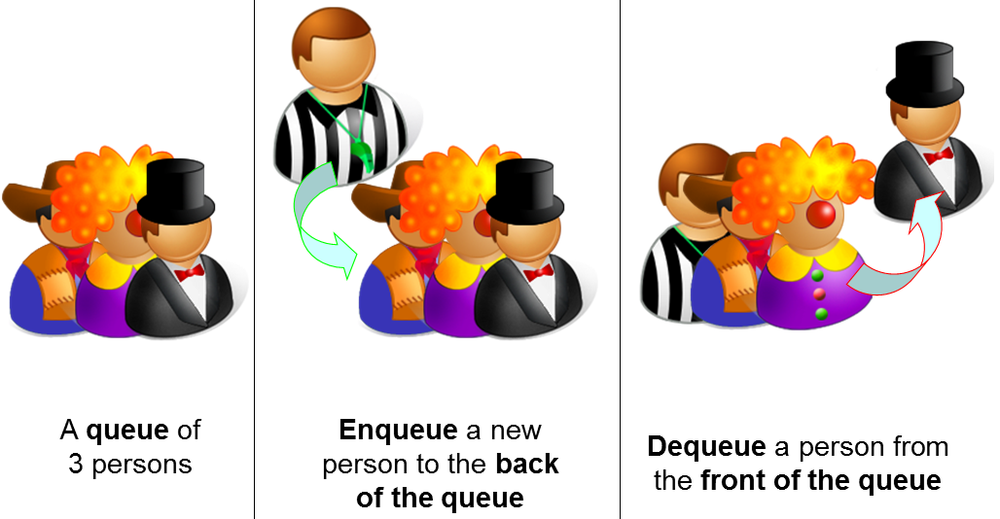
Colas o Queues: Interfaz
enqueue(): Ingresa un nuevo elemento al final de la coladequeue(): Elimina el primer elemento de la colasize(): Devuelve el tamaño de la queuecheck(): Devuelve el valor de un elemento de la colais_empty(): Revisa si la queue está vacíais_full(): Revisa si la queue está llena (solo para tamaños fijos)
Colas o Queues
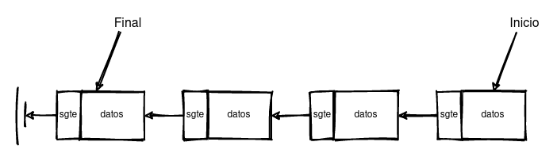
Colas o Queues: enqueue()
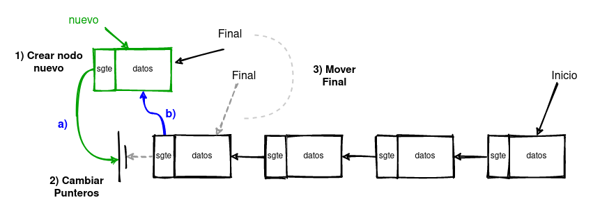
Colas o Queues: dequeue()
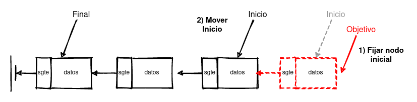
Colas o Queues Circulares
Es una fila o cola que se implementa utilizando estructuras de datos circulares, i.e., listas enlazadas circulares.
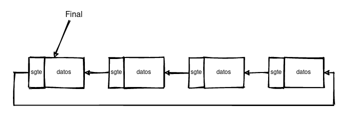
Ventaja principal: necesita sólo un puntero para manejar la posición final. No hay necesidad de recorrer toda la fila para hacer cambios.
Colas o Queues Circulares: enqueue()
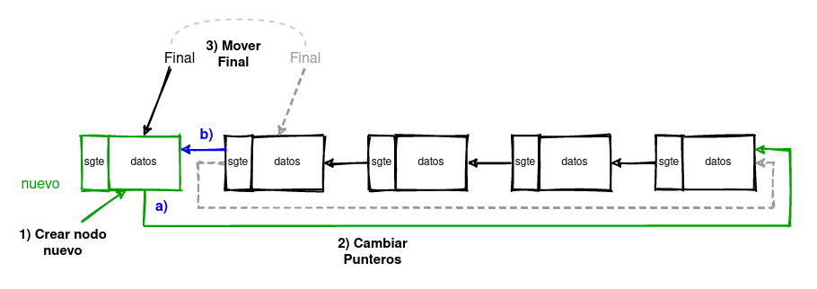
Colas o Queues Circulares: dequeue()
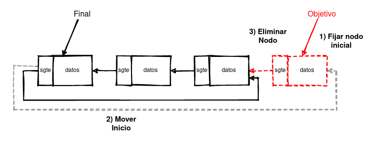
Actividad Clase 10: Elegir la estructura adecuada
En grupos, deben discutir las posibles estructuras de datos con las que se podría representar cada caso:
- Listas Doblemente Enlazadas
- Pilas (Stack)
- Colas (Queue)
- Buffers Circulares
Caso 1: Editor de Texto
Supongamos que estamos diseñando un editor de texto con función Deshacer/Rehacer.
¿Qué estructura usarías para implementar la funcionalidad de deshacer?
- Opciones: Lista doblemente enlazada, Stack, Queue, Buffer Circular
Caso 2: Cola de Impresión
Una impresora recibe trabajos de varios usuarios y los procesa en orden de llegada.
¿Qué estructura usarías para gestionar la cola de impresión?
- Opciones: Lista doblemente enlazada, Stack, Queue, Buffer Circular
Caso 3: Playlist de Música
Queremos que las canciones se reproduzcan en orden, y al terminar la última, volver a la primera.
¿Qué estructura usarías para manejar la playlist?
- Opciones: Lista doblemente enlazada, Stack, Queue, Buffer Circular
Caso 4: Almacenamiento temporal de datos de sensores
Un microcontrolador recibe datos de un sensor a velocidad constante y debe mantener los últimos N valores.
¿Qué estructura usarías para mantener estos datos de forma eficiente?
- Opciones: Lista doblemente enlazada, Stack, Queue, Buffer Circular
Caso 5: Navegador Web - Historial
Deseamos implementar la función de ir hacia atrás y hacia adelante en un navegador web.
¿Qué estructura usarías para almacenar las páginas visitadas?
- Opciones: Lista doblemente enlazada, Stack, Queue, Buffer Circular
Caso 6: Tareas de CPU en tiempo real
Un sistema operativo debe ejecutar procesos en un esquema de round-robin, alternando entre ellos continuamente.
¿Qué estructura usarías para gestionar la cola de procesos?
- Opciones: Lista doblemente enlazada, Stack, Queue, Buffer Circular
Caso 7: Tareas de CPU en tiempo real
Un sistema operativo debe ejecutar procesos en un esquema de round-robin, alternando entre ellos continuamente.
¿Qué estructura usarías para gestionar la cola de procesos?
- Opciones: Lista doblemente enlazada, Stack, Queue, Buffer Circular
Caso 7: Manejo de paquetes en un router
Un router recibe paquetes de datos que deben ser enviados en el mismo orden en que llegaron. Si el buffer se llena, debe descartar los más antiguos.
¿Qué estructura usarías para gestionar los paquetes en el buffer?
- Opciones: Lista enlazada, Queue, Buffer Circular, Stack
Caso 8: Editor colaborativo en línea
En un editor como Google Docs, varios usuarios editan un documento simultáneamente. El sistema debe mantener historial de cambios y permitir deshacer/rehacer.
¿Qué estructura usarías para manejar el documento y el historial de acciones?
- Opciones: Lista doblemente enlazada, Stack, Queue, Lista circular
Caso 9: Simulación de tráfico vehicular
En una simulación de ciudad, los autos entran y salen de las calles a través de intersecciones. Deben mantenerse en orden de llegada para avanzar correctamente.
¿Qué estructura usarías para representar el flujo de autos en una calle?
- Opciones: Queue, Buffer Circular, Lista enlazada, Stack
Caso 10: Motor de videojuegos (eventos en tiempo real)
Un videojuego recibe eventos como teclas presionadas, colisiones y disparos. El motor debe procesarlos en orden de llegada sin acumular un backlog infinito.
¿Qué estructura usarías para gestionar los eventos?
- Opciones: Queue, Buffer Circular, Lista enlazada, Stack
Caso 11: Sistema de mensajería instantánea
En aplicaciones como WhatsApp, los mensajes deben mantenerse en orden de envío y permitir al usuario desplazarse hacia atrás y adelante en la conversación.
¿Qué estructura usarías para almacenar y navegar los mensajes?
- Opciones: Lista doblemente enlazada, Queue, Stack, Lista circular
Caso 12: Resolución de expresiones matemáticas
Un programa debe evaluar expresiones con paréntesis y operadores,
como (5 + 3) * (12 / (4 - 2)), respetando la precedencia y el orden.
¿Qué estructura usarías para manejar operadores y operandos?
- Opciones: Stack, Queue, Lista enlazada, Buffer Circular
Discusión en grupos
Divídanse en grupos y discutan:
- Qué estructura es más adecuada para cada caso
- Justifiquen su elección
- Piensen en ventajas y desventajas